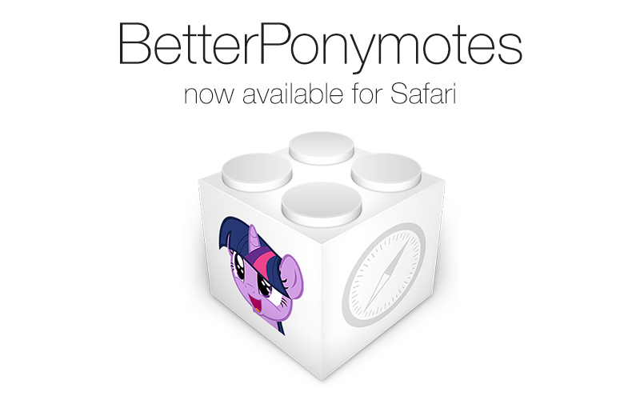
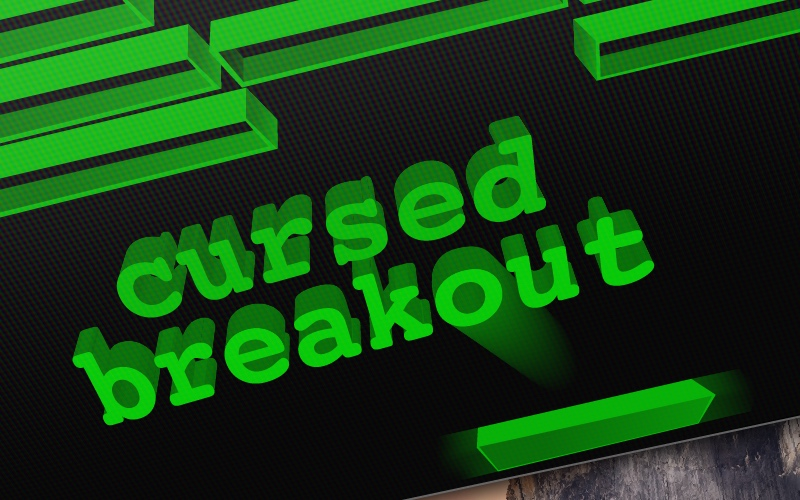

BetterPonymotes for Safari

BetterPonymotes for Safari is a port of the popular emote viewer for reddit. It is designed to run natively on Safari without any additional userscripts or plugins.
Cursed-Breakout

Cursed-Breakout is the first project that I ever published. It is a simple Breakout clone that was built with C using the ncurses library.